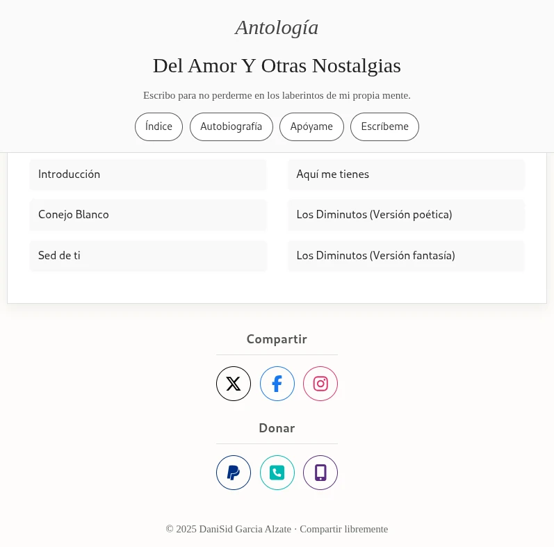
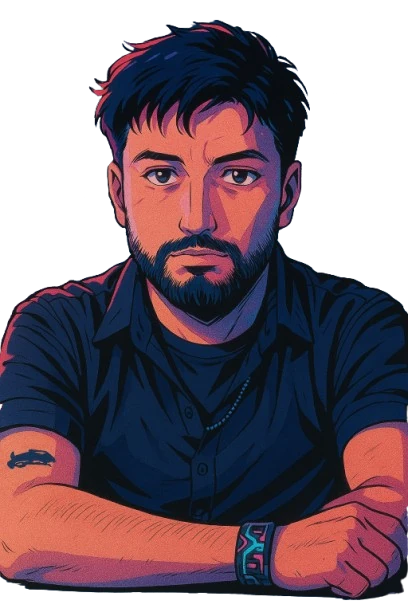
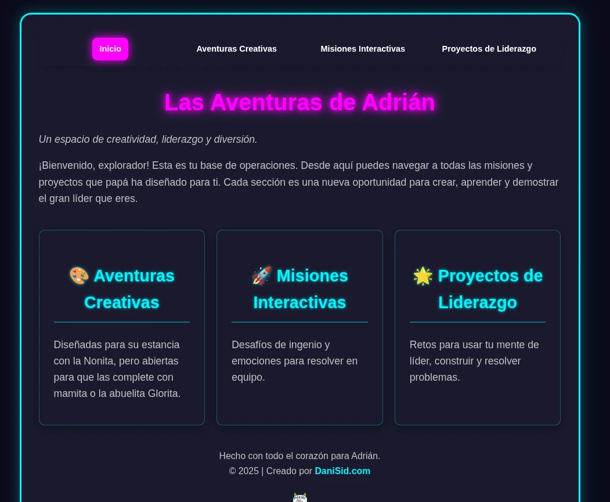
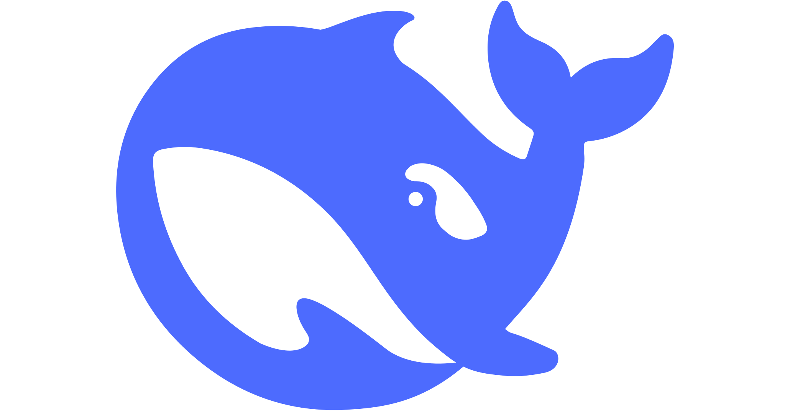
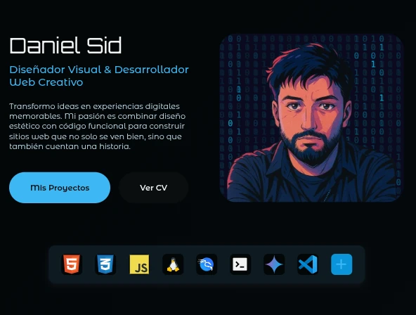
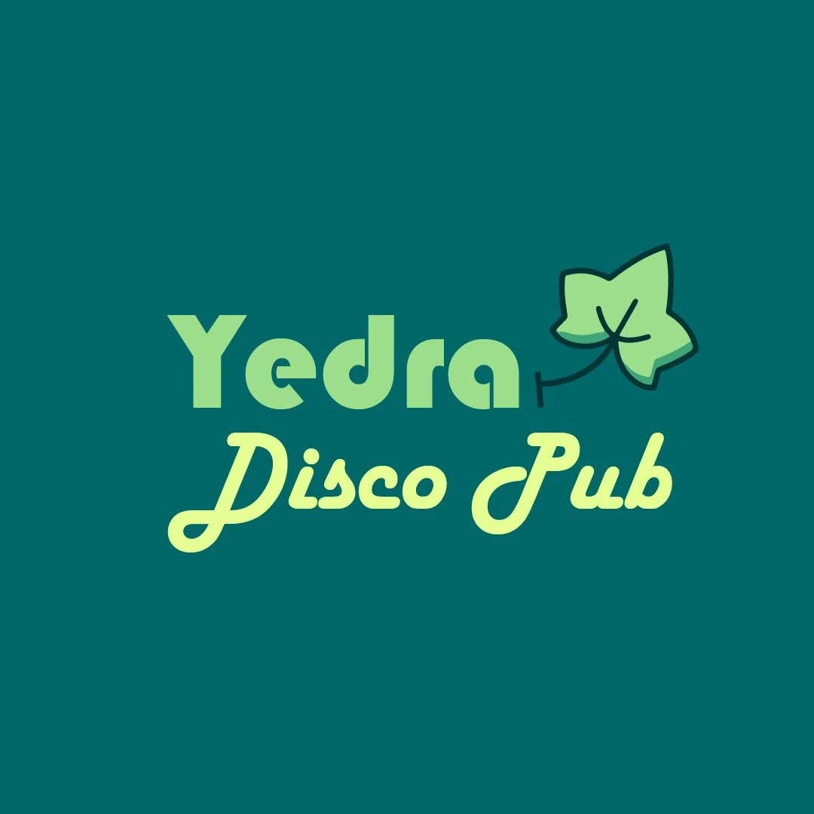

Antología: Del Amor y Otras Nostalgias
Un proyecto web minimalista que presenta una antología de poemas en una experiencia de lectura inmersiva, simulando un libro digital. Construido con HTML, CSS y JavaScript puro.


Transformo ideas en experiencias digitales memorables. Mi pasión es combinar diseño estético con código funcional para construir sitios web que no solo se ven bien, sino que también cuentan una historia.




Un proyecto web minimalista que presenta una antología de poemas en una experiencia de lectura inmersiva, simulando un libro digital. Construido con HTML, CSS y JavaScript puro.

Un proyecto web pedagógico y lúdico diseñado para mi hijo, fomentando la creatividad, el liderazgo y la inteligencia emocional a través de misiones y juegos interactivos.

"DaniSid :: Cybergrid" es una página web inmersiva con estética cyberpunk que presenta a DaniSid, un creador digital especializado en desarrollo web, diseño, ilustración y motion graphics. Con un diseño futurista, incluye un núcleo de datos, una red de creaciones filtrable (portales web, arte neón, reinos 3D), un arsenal de ciberherramientas (HTML, React, Blender, IA), y una terminal de conexión. El botón "Explorar la Red" invita a descubrir un portafolio de proyectos en un ciberespacio visualmente impactante.



DSid es un proyecto práctico de creación web que combina diseño visual y desarrollo frontend. Construido con HTML, CSS y JavaScript, incluye un efecto "Matrix" animado y un diseño responsive, reflejando habilidades en UX/UI y soluciones creativas para sitios modernos.

Campaña de marketing digital y diseño de material publicitario para redes sociales, enfocada en aumentar la visibilidad y el engagement del público para Yedra Disco Pub.


Colección de diseños de logotipos modernos y creativos, creados para transmitir la esencia de marcas únicas con un enfoque minimalista y funcional.

Colaboré con La Leyenda del Dorado, la prestigiosa carrera de ciclomontañismo por etapas en Colombia, diseñando carteles y material gráfico que aumentaron la participación digital en un 40%. Produje piezas informativas para redes sociales, destacando etapas de hasta 397 km y 9,000 m de ascenso, y apoyé en la edición de videos diarios para medios deportivos, capturando la emoción de un evento que reúne a 500 ciclistas de 34 países y genera un impacto económico de USD 2 millones por edición.

Apasionado por las aves y su fascinante biología, he desarrollado una serie de ilustraciones digitales en Photoshop con un enfoque realista, destacando detalles como plumajes, texturas y características anatómicas propias de especies colombianas y exóticas. Mi interés por la ornitología se fusiona con mi habilidad en diseño gráfico, permitiéndome crear piezas que no solo capturan la esencia visual de estas criaturas, sino que también reflejan mi compromiso con la precisión científica y la expresión artística a través de la ilustración digital.
He creado animaciones motion graphics utilizando Adobe After Effects, partiendo de vectores diseñados en Illustrator para garantizar precisión y escalabilidad. Empleo técnicas avanzadas de animación, integrando plugins como Composer para optimizar flujos de trabajo y lograr transiciones fluidas, efectos dinámicos y composiciones visualmente impactantes. Este enfoque me ha permitido desarrollar piezas publicitarias y presentaciones que combinan creatividad y funcionalidad, adaptadas a las necesidades de marcas y campañas digitales.
"Del Amor y Otras Nostalgias". Un espacio personal donde exploro la escritura y las emociones a través de la poesía.
Leer másUn proyecto de exploración sobre el Diseño Humano, creando informes visuales y personalizados para el autoconocimiento.
Ver InformesUn proyecto pedagógico y lúdico diseñado para mi hijo, fomentando la creatividad y el liderazgo a través de misiones y juegos interactivos.
DescubrirExplorando el mundo del hacking ético y la seguridad digital. Un campo de estudio fascinante utilizando herramientas como Kali Linux para fortalecer la seguridad.
Explorar másInterfaces modernas y optimizadas para una experiencia de usuario única.
Sitios responsivos con HTML, CSS, JavaScript y WordPress.
Branding, logotipos y material publicitario creativo.
Animaciones y videos impactantes para promoción digital.
Lideré el diseño, desarrollo y despliegue completo del portafolio. Implementé un flujo de trabajo profesional con Git/GitHub y CI/CD en Netlify, migrando desde un hosting tradicional. Apliqué principios de ingeniería de software para la refactorización, optimización y documentación, convirtiéndolo en un laboratorio digital para mostrar habilidades técnicas y creativas.
Trabajé como diseñador gráfico y soporte técnico, creando material gráfico y publicitario para redes e impresos que incrementó la participación digital en un 40%, produciendo contenido audiovisual para redes y medios deportivos, y apoyando en la venta de más de 500 plazas a través de campañas visuales efectivas.
Fui diseñador gráfico y operador de máquinas, enfocándome en el diseño y producción de estampados textiles, corte y grabado láser, manejando maquinaria especializada para sublimación, impresión DTG y termofijado, lo que me permitió combinar creatividad con habilidades técnicas en procesos de producción.
Trabajé como animador 2D en 2016, donde me encargué de crear animaciones motion graphics para proyectos de modelado arquitectónico y campañas publicitarias, logrando mejorar la calidad visual de las presentaciones de los clientes en un 30% y entregando proyectos con un 100% de satisfacción, lo que fortaleció el impacto visual de cada trabajo realizado.